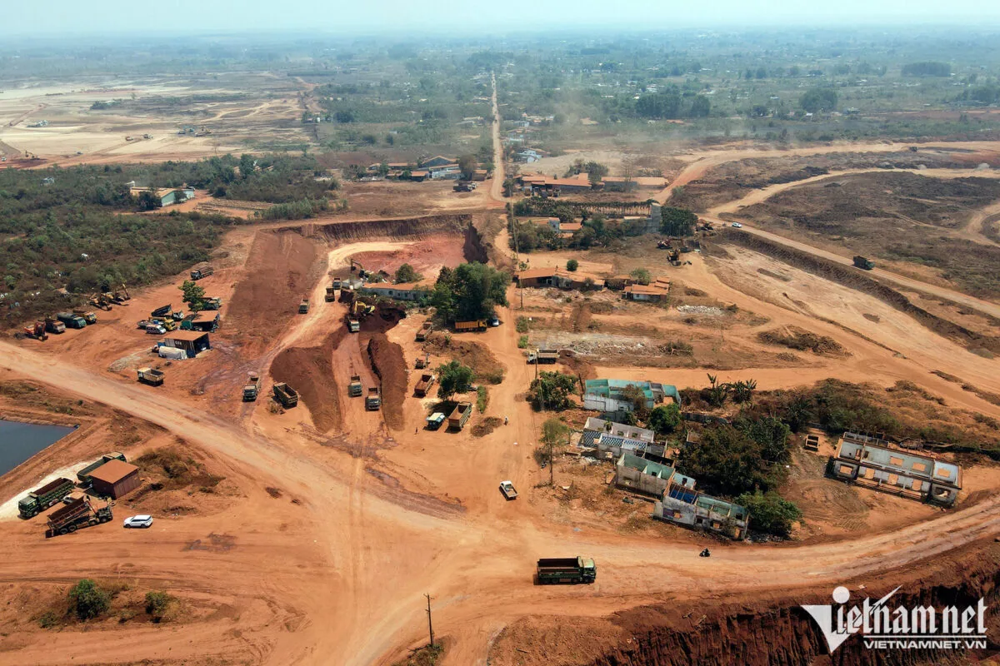
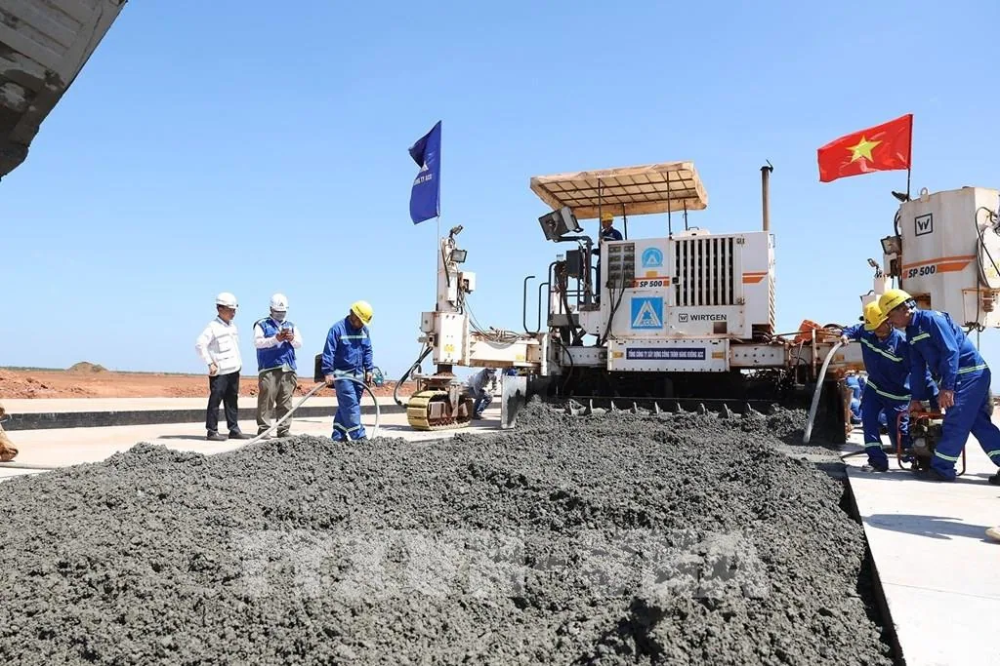
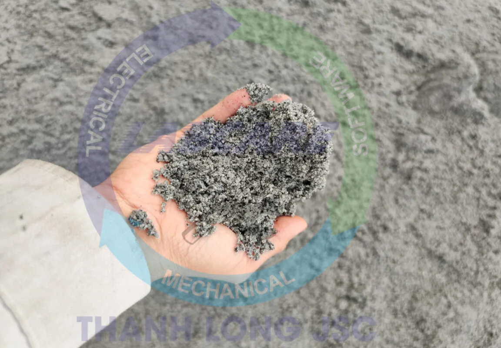
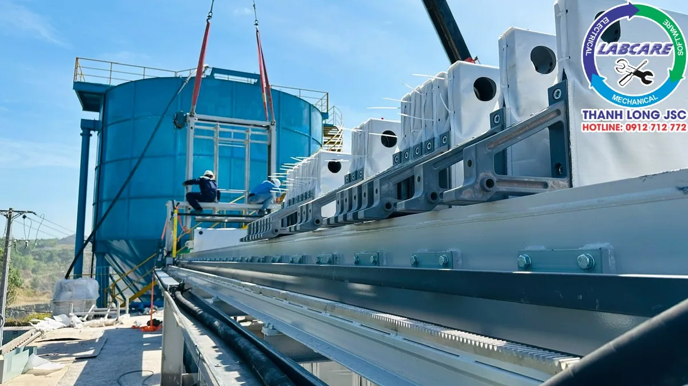
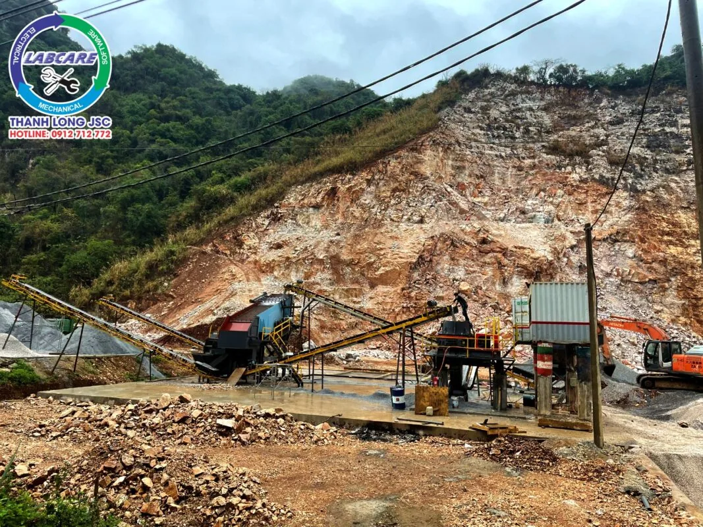

Sân bay Quốc tế Long Thành, với quy mô dự kiến lớn nhất Việt Nam, đang tạo ra nhu cầu lớn về đá xây dựng và chất lượng đá xây dựng. Ước tính tổng lượng đá cần thiết cho toàn bộ dự án lên đến 22 triệu m3. Chiếm gần 60% nhu cầu đá xây dựng cho các công trình trọng điểm trong giai đoạn 2024-2030.

Thực trạng và chất lượng đá xây dựng tại Sân Bay Long Thành
Những dự án đầu tư công lớn đã và đang triển khai như các đường vành đai, cao tốc Bắc-Nam. Sân bay Long Thành sẽ giúp cho ngành vật liệu xây dựng và hạ tầng được hưởng lợi lớn trực tiếp.
Hiện nay nguồn vật tư, vật liệu đặc biệt là cát và đá xây dựng phục vụ thi công gói thầu có hiện tượng khan hiếm, nguồn cung hạn chế. Các nhà cung cấp cũng có hiện tượng cạnh tranh, nâng giá các loại vật tư, vật liệu này

Sân bay Long Thành là một dự án trọng điểm quốc gia, có tác động lớn đến sự phát triển kinh tế – xã hội của khu vực. Nhu cầu đá xây dựng cho sân bay sẽ tạo ra nhiều cơ hội cho ngành đá xây dựng. Đồng thời cũng đặt ra những thách thức về khai thác bền vững và quy hoạch khai thác.
Nguồn cung, Chất lượng đá xây dựng

Mỏ đá Tân Cang:
Nằm cách sân bay Long Thành khoảng 25km, đây là cụm mỏ đá lớn nhất khu vực. Được dự đoán sẽ là nguồn cung chính cho dự án. Mỏ đá Tân Cang Đồng Nai
Cụm mỏ Thạnh Phú – Thiện Tân:
Nằm gần sông Đồng Nai, thuận lợi cho vận chuyển đường thủy. Cụm mỏ này sẽ cung cấp đá cho các dự án tại Đồng bằng sông Cửu Long.
Các mỏ đá khác:
Ngoài ra, một số mỏ đá ở các tỉnh lân cận như Bình Dương, Bình Phước, Bà Rịa – Vũng Tàu, Bình Thuận, Ninh Thuận, Cao Bằng, Lạng Sơn,… cũng có thể tham gia cung cấp đá cho sân bay Long Thành.
Tác động đến ngành chất lượng đá xây dựng:

- Nhu cầu tăng cao: Nhu cầu đá xây dựng cho sân bay Long Thành dự kiến sẽ thúc đẩy mạnh mẽ ngành đá xây dựng trong khu vực, đặc biệt là các tỉnh Đồng Nai, Bình Dương, Bà Rịa – Vũng Tàu.
- Giá đá tăng: Do nhu cầu tăng cao và nguồn cung hạn chế. Giá đá xây dựng tại khu vực dự kiến sẽ tăng trong thời gian tới.
- Cơ hội cho các doanh nghiệp: Các doanh nghiệp khai thác và chế biến đá xây dựng có vị trí thuận lợi, năng lực sản xuất mạnh sẽ có nhiều cơ hội phát triển trong giai đoạn này.
Vấn đề xuất hiện và tác động đến chất lượng đá xây dựng
Qua nguồn cung và tác động của sân bay Long Thành tới ngành xây dựng thì xuất hiện các vấn đề như sau:
Việc khai thác đá xây dựng cần đảm bảo tuân thủ các quy định về môi trường. Tránh gây ô nhiễm và ảnh hưởng đến hệ sinh thái.

Cần có quy hoạch khai thác đá xây dựng hợp lý để đảm bảo nguồn cung lâu dài cho các dự án phát triển.
Vậy để đảm bảo tiến độ và đủ nguyên liệu để cung cấp cho dự án sân bay Long Thành. Các đơn vị cung cấp đá xây dựng cần phải lắp đặt và bổ sung thêm các dây chuyền, các thiết bị mới cho mỏ của mình.

Đơn vị cung cấp dây chuyền sản xuất đảm bảo chất lượng đá xây dựng
Máy nghiền đá Thanh Long đơn vị chuyên cung cấp các thiết bị sản xuất đá xây dựng phục vụ cho cao tốc, hầm chui, cát nhân tạo,…. Thanh Long JSC là đơn vị đầu tiên đưa ra các giải pháp mang cát nhân tạo thay thế cát tự nhiên. Với mục tiêu ngăn chặn sự sạt lở do khai thác cát tự nhiên quá mức. Cát nhân tạo là một giải pháp tối ưu, công nghệ sản xuất mới. Là lời giải cho bài toán về thực trạng tài nguyên cát hiện nay.
Liên hệ với chúng tôi để được tư vấn và đưa ra các giải pháp phù hợp cho mỏ của mình